This simple type specifies the pattern which shall be used to lay the pattern color over the background color for a shading.
This pattern consists of a mask which is applied over the background shading color to get the locations where the pattern color should be shown. Each of these possible masks are shown in the enumeration values located below. In each example, black has been used as the fill color, and white has been used as the pattern color.
[Example: Consider a shaded paragraph which uses a 10 percent foreground fill, resulting in the following WordprocessingML:
<w:shd w:val="pct10" .../>
This shading val is pct10, indicating that the border style is a 10 percent foreground fill mask. end example]
This simple type's contents are a restriction of the XML Schema string datatype.
The following are possible enumeration values for this type:
|
Enumeration Value |
Description |
|
clear (No Pattern) |
Specifies that there shall be no pattern used on the current shaded region (i.e. the pattern shall be a complete fill with the background color), as follows:
|
|
diagCross (Diagonal Cross Pattern) |
Specifies that the pattern used on the current shaded region shall be a series of diagonal crosses, as follows:
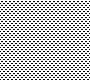 |
|
diagStripe (Diagonal Stripe Pattern) |
Specifies that the pattern used on the current shaded region shall be a series of diagonal stripes, as follows:
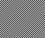 |
|
horzCross (Horizontal Cross Pattern) |
Specifies that the pattern used on the current shaded region shall be a series of horizontal crosses, as follows:
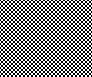 |
|
horzStripe (Horizontal Stripe Pattern) |
Specifies that the pattern used on the current shaded region shall be a series of horizontal stripes, as follows:
|
|
nil (No Pattern) |
Specifies that there shall be no pattern used on the current shaded region (i.e. the pattern shall be a complete fill with the background color), as follows:
|
|
pct10 (10% Fill Pattern) |
Specifies that the pattern used for the current shaded region shall be a 10% fill pattern, as follows:
|
|
pct12 (12.5% Fill Pattern) |
Specifies that the pattern used for the current shaded region shall be a 12.5% fill pattern, as follows:
|
|
pct15 (15% Fill Pattern) |
Specifies that the pattern used for the current shaded region shall be a 15% fill pattern, as follows:
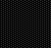 |
|
pct20 (20% Fill Pattern) |
Specifies that the pattern used for the current shaded region shall be a 20% fill pattern, as follows:
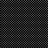 |
|
pct25 (25% Fill Pattern) |
Specifies that the pattern used for the current shaded region shall be a 25% fill pattern, as follows:
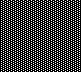 |
|
pct30 (30% Fill Pattern) |
Specifies that the pattern used for the current shaded region shall be a 30% fill pattern, as follows:
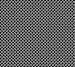 |
|
pct35 (35% Fill Pattern) |
Specifies that the pattern used for the current shaded region shall be a 35% fill pattern, as follows:
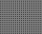 |
|
pct37 (37.5% Fill Pattern) |
Specifies that the pattern used for the current shaded region shall be a 37.5% fill pattern, as follows:
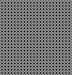 |
|
pct40 (40% Fill Pattern) |
Specifies that the pattern used for the current shaded region shall be a 40% fill pattern, as follows:
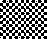 |
|
pct45 (45% Fill Pattern) |
Specifies that the pattern used for the current shaded region shall be a 45% fill pattern, as follows:
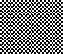 |
|
pct5 (5% Fill Pattern) |
Specifies that the pattern used for the current shaded region shall be a 5% fill pattern, as follows:
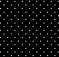 |
|
pct50 (50% Fill Pattern) |
Specifies that the pattern used for the current shaded region shall be a 50% fill pattern, as follows:
|
|
pct55 (55% Fill Pattern) |
Specifies that the pattern used for the current shaded region shall be a 55% fill pattern, as follows:
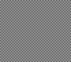 |
|
pct60 (60% Fill Pattern) |
Specifies that the pattern used for the current shaded region shall be a 60% fill pattern, as follows:
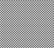 |
|
pct62 (62.5% Fill Pattern) |
Specifies that the pattern used for the current shaded region shall be a 62.5% fill pattern, as follows:
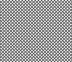 |
|
pct65 (65% Fill Pattern) |
Specifies that the pattern used for the current shaded region shall be a 65% fill pattern, as follows:
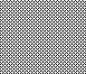 |
|
pct70 (70% Fill Pattern) |
Specifies that the pattern used for the current shaded region shall be a 70% fill pattern, as follows:
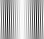 |
|
pct75 (75% Fill Pattern) |
Specifies that the pattern used for the current shaded region shall be a 75% fill pattern, as follows:
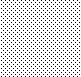 |
|
pct80 (80% Fill Pattern) |
Specifies that the pattern used for the current shaded region shall be a 80% fill pattern, as follows:
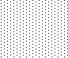 |
|
pct85 (85% Fill Pattern) |
Specifies that the pattern used for the current shaded region shall be a 85% fill pattern, as follows:
|
|
pct87 (87.5% Fill Pattern) |
Specifies that the pattern used for the current shaded region shall be a 87.5% fill pattern, as follows:
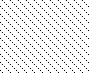 |
|
pct90 (90% Fill Pattern) |
Specifies that the pattern used for the current shaded region shall be a 90% fill pattern, as follows:
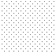 |
|
pct95 (95% Fill Pattern) |
Specifies that the pattern used for the current shaded region shall be a 95% fill pattern, as follows:
|
|
reverseDiagStripe (Reverse Diagonal Stripe Pattern) |
Specifies that the pattern used on the current shaded region shall be a series of reverse diagonal stripes, as follows:
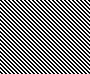 |
|
solid (100% Fill Pattern) |
Specifies that the pattern used for the current shaded region shall be a 100% fill pattern, as follows:
|
|
thinDiagCross (Thin Diagonal Cross Pattern) |
Specifies that the pattern used on the current shaded region shall be a series of thin diagonal crosses, as follows:
|
|
thinDiagStripe (Thin Diagonal Stripe Pattern) |
Specifies that the pattern used on the current shaded region shall be a series of thin diagonal stripes, as follows:
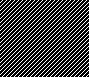 |
|
thinHorzCross (Thin Horizontal Cross Pattern) |
Specifies that the pattern used on the current shaded region shall be a series of thin horizontal crosses, as follows:
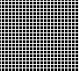 |
|
thinHorzStripe (Thin Horizontal Stripe Pattern) |
Specifies that the pattern used on the current shaded region shall be a series of thin horizontal stripes, as follows:
|
|
thinReverseDiagStripe (Thin Reverse Diagonal Stripe Pattern) |
Specifies that the pattern used on the current shaded region shall be a series of thin reverse diagonal stripes, as follows:
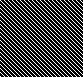 |
|
thinVertStripe (Thin Vertical Stripe Pattern) |
Specifies that the pattern used on the current shaded region shall be a series of thin vertical stripes, as follows:
|
|
vertStripe (Vertical Stripe Pattern) |
Specifies that the pattern used on the current shaded region shall be a series of vertical stripes, as follows:
|


|
Referenced By |
|
shd@val (§2.3.2.30); shd@val (§2.4.33); shd@val (§2.4.34); shd@val (§2.4.35); shd@val (§2.3.1.31) |
The following XML Schema fragment defines the contents of this simple type:
<simpleType name="ST_Shd">
<restriction base="xsd:string">
<enumeration value="nil"/>
<enumeration value="clear"/>
<enumeration value="solid"/>
<enumeration value="horzStripe"/>
<enumeration value="vertStripe"/>
<enumeration value="reverseDiagStripe"/>
<enumeration value="diagStripe"/>
<enumeration value="horzCross"/>
<enumeration value="diagCross"/>
<enumeration value="thinHorzStripe"/>
<enumeration value="thinVertStripe"/>
<enumeration value="thinReverseDiagStripe"/>
<enumeration value="thinDiagStripe"/>
<enumeration value="thinHorzCross"/>
<enumeration value="thinDiagCross"/>
<enumeration value="pct5"/>
<enumeration value="pct10"/>
<enumeration value="pct12"/>
<enumeration value="pct15"/>
<enumeration value="pct20"/>
<enumeration value="pct25"/>
<enumeration value="pct30"/>
<enumeration value="pct35"/>
<enumeration value="pct37"/>
<enumeration value="pct40"/>
<enumeration value="pct45"/>
<enumeration value="pct50"/>
<enumeration value="pct55"/>
<enumeration value="pct60"/>
<enumeration value="pct62"/>
<enumeration value="pct65"/>
<enumeration value="pct70"/>
<enumeration value="pct75"/>
<enumeration value="pct80"/>
<enumeration value="pct85"/>
<enumeration value="pct87"/>
<enumeration value="pct90"/>
<enumeration value="pct95"/>
</restriction>
</simpleType>